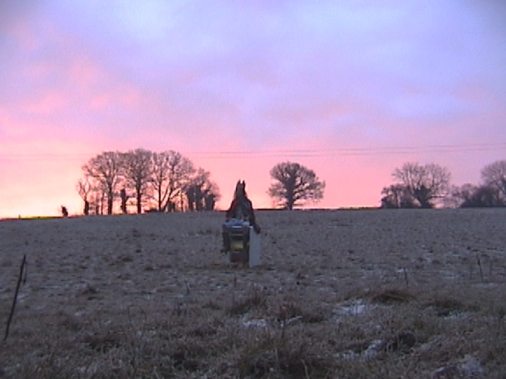
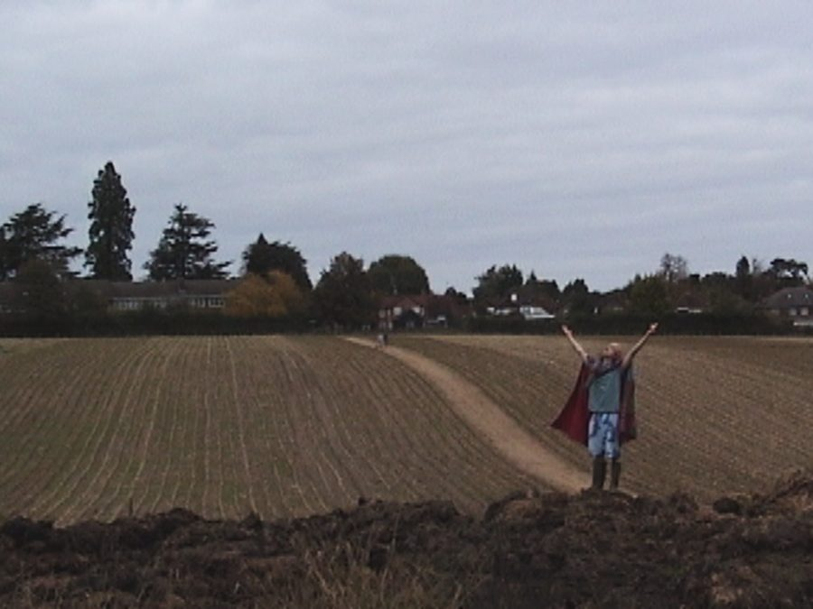
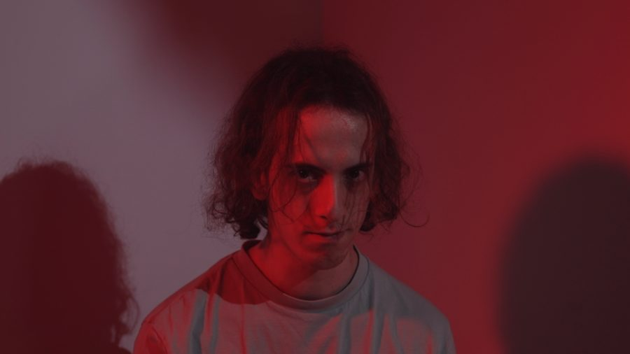
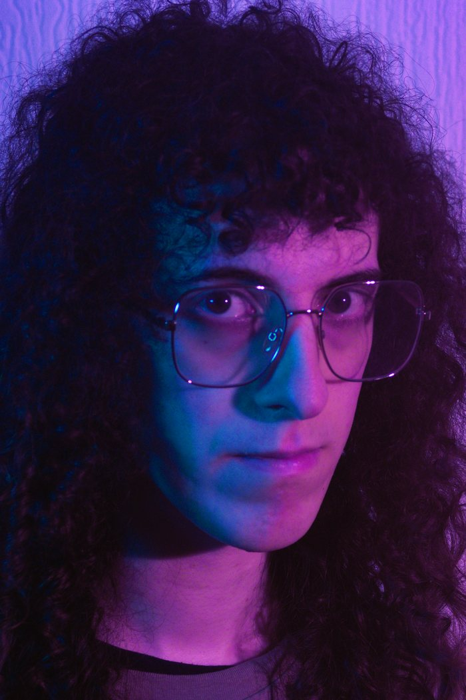

Francesca Iannucci · Writer / Director · London / UK
Finto Films
Want to watch the most cursed depiction of life imaginable? Now finishing my debut feature: The Ice Lolly King.
Selected work
Films

The Ice Lolly King
A coming-of-age comedy-drama shot on a Digital8 camcorder. A college dropout who trained his whole life as a hockey player has one week left before moving back in with his strict parents.
Watch the clip →
Break the Cycle
A sci-fi short about a man who wakes in a new, hazy world and discovers the reason for his futile existence.
Watch the film →
It’s Really Beautiful Out
An extremely cursed and funny portrait of a deeply troubled narcissistic person.
Watch the film →
About
An emerging trans filmmaker in London.
Writer, director, cinematographer and editor, with a taste for the uncomfortable and the absurd. Previously crew on the British feature One Life (2023).